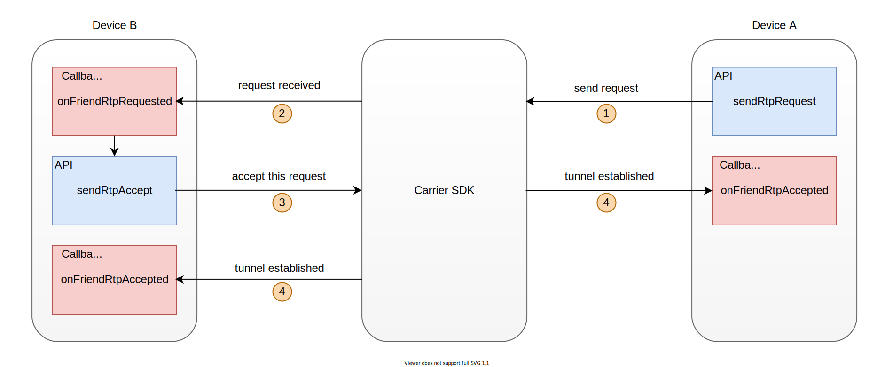
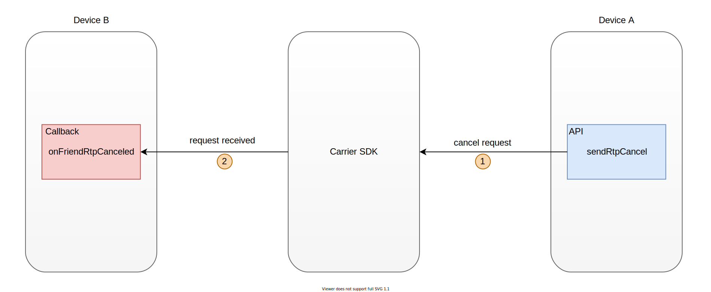

Streaming Setup¶
Overview¶
This section will show you how to establish a streaming tunnel and start streaming.
Establish Streaming Tunnel¶
{kind=link}
To establish a tunnel with other carrier nodes, call sendRtpRequest() first.
Carrier.getInstance().sendRtpRequest(friendId, width, height);
friendId : The target id.
width : The width of the resolution used.
height : The height of the resolution used.
When receiving requests from other nodes, callback onFriendRtpRequested will be called.
As follows:
@Override
public void onFriendRtpRequested(Carrier carrier, String friendid, int width, int height) {
}
carrier : A handle to the Carrier node instance.
friendid : The friend id from who send the request.
width : The width of the resolution used by the friend who send the request.
height : The height of the resolution used by the friend who send the request.
Accept friend’s request, you can call sendRtpAccept().
Carrier.getInstance().sendRtpAccept(friendId);
friendId : The ID of the friend who accepted the request.
Finally, the tunnel is successfully established and each other’s callback onFriendRtpAccepted will be called.
@Override
public void onFriendRtpAccepted(Carrier carrier, String friendid) {
}
carrier : A handle to the Carrier node instance.
friendid : The ID of the friend who established the stream tunnel with you
Start Streaming¶
After the tunnel is established, you can call writeRtpVideoData() and writeRtpAudioData() to send streaming data.
Carrier.getInstance().writeRtpVideoData(friendId, dataBytes, length, isKeyFrame);
friendId : The target id.
dataBytes : Data to be sent.
length : The length of the data to be sent.
isKeyFrame : Whether the data to be sent is a key frame.
Carrier.getInstance().writeRtpAudioData(friendId, dataBytes, length);
friendId : The target id.
dataBytes : Data to be sent.
length : The length of the data to be sent.
When streaming data is received, callback onFriendRtpVideo and onFriendRtpAudio will be called.
@Override
public void onFriendRtpVideo(Carrier carrier, String friendid, byte[] data) {
}
carrier : A handle to the Carrier node instance.
friendid : The friend who sent the data.
data : The data received.
@Override
public void onFriendRtpAudio(Carrier carrier, String friendid, byte[] data) {
}
carrier : A handle to the Carrier node instance.
friendid : The friend who sent the data.
data : The data received.
Close Streaming Tunnel¶
{kind=link}
Close the tunnel, you can call sendRtpCancel().
Carrier.getInstance().sendRtpCancel(friendId);
friendId : The target id.
When other carrier nodes cancel the tunnel with you,
callback onFriendRtpCanceled will be called.
@Override
public void onFriendRtpCanceled(Carrier carrier, String friendid) {
}
carrier : A handle to the Carrier node instance.
friendid : The ID of the friend who cenceled the stream tunnel with you.